VR-games
Hier een top 10 van de populairste VR-games op dit moment
1. Beat Saber
Beat Saber is een ritmegame waarbij je blokken moet hakken met lichtzwaarden die je in je handen houdt. De gameplay is makkelijk te begrijpen, maar moeilijk onder de knie te krijgen. De muziek is ook geweldig en varieert van pop tot rock tot EDM.
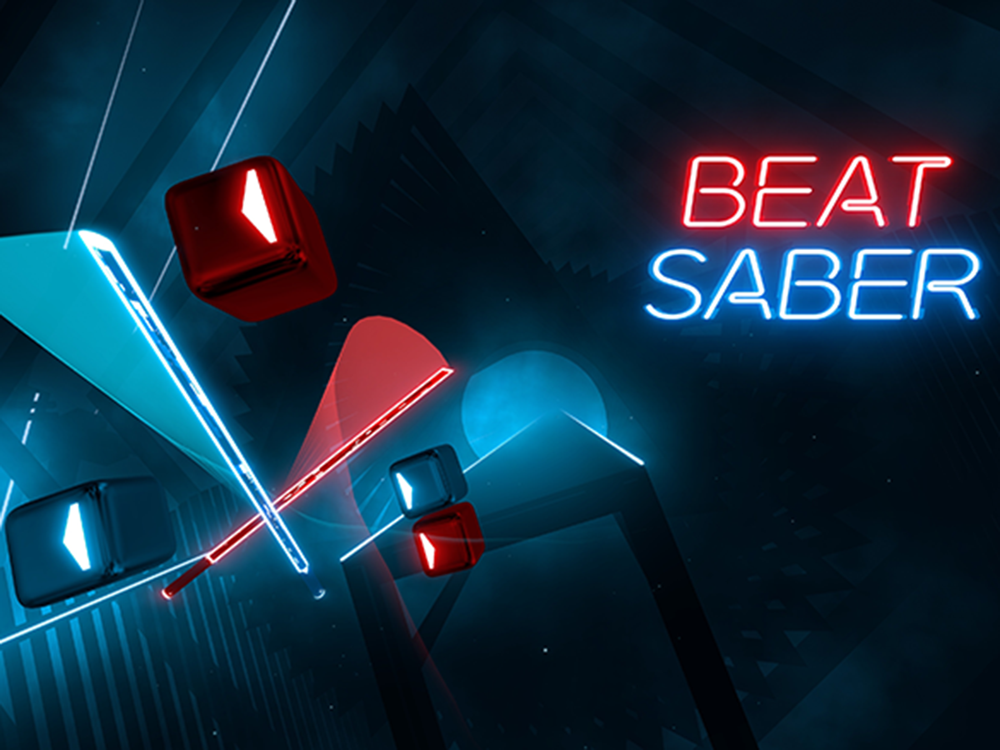 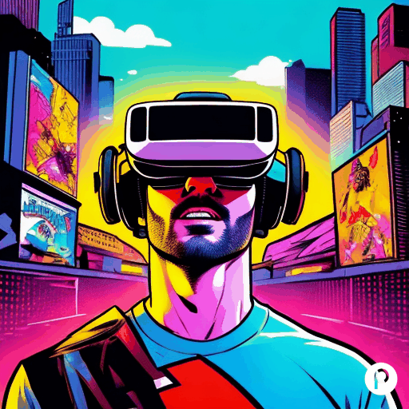2. Elven Assassin
Elven Assassin is een multi player VR-shooter game waarbij je moet vechten tegen golven van vijanden. Het spel heeft een leuke cartooneske stijl en biedt een uitdaging voor spelers van alle niveaus.
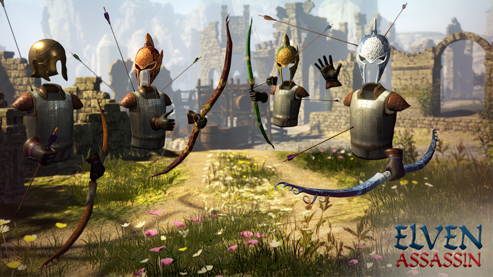3. Pistol Whip
Pistol Whip is een ritme game waarbij je als cowboy de vijanden moet neerschieten terwijl je de muziek volgt. Het spel biedt een spannende en intense ervaring die vergelijkbaar is met Beat Saber, maar dan met pistolen in plaats van lichtzwaarden.
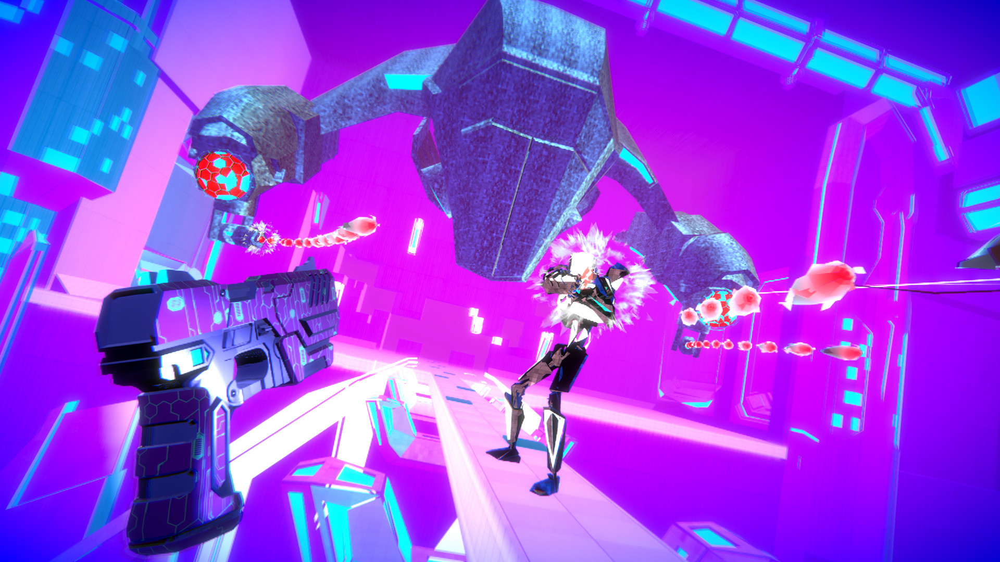4. Fruit Ninja
Fruit Ninja is een VR-arcadespel waarbij je fruit moet hakken met zwaarden. Het spel biedt een eenvoudige maar verslavende gameplay en is perfect voor een snelle spelervaring.
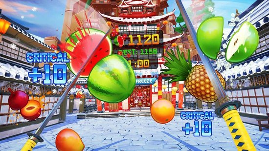5. Cook out
Cook Out is een multi player VR-kookspel waarbij je verschillende maaltijden kunt bereiden en serveren. Het spel biedt een leuke en interactieve ervaring waarbij je samen onder druk van wachtende klanten diverse gerechten gaat bereiden.
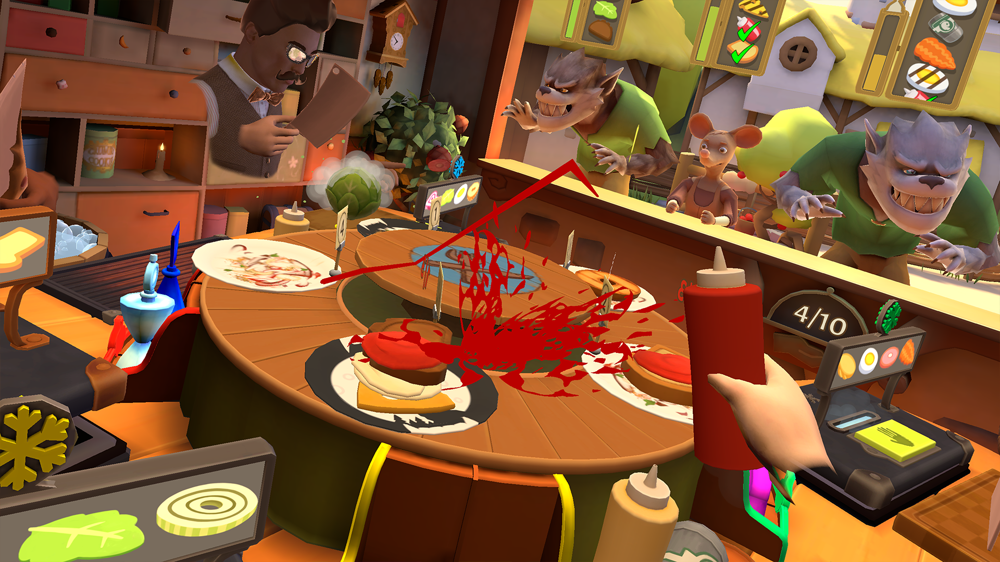6. Minogolf Walkabout
Minigolf is een VR-sportspel waarbij je minigolf speelt in verschillende omgevingen. Het spel biedt een leuke en interactieve ervaring met geweldige graphics en geluidseffecten.
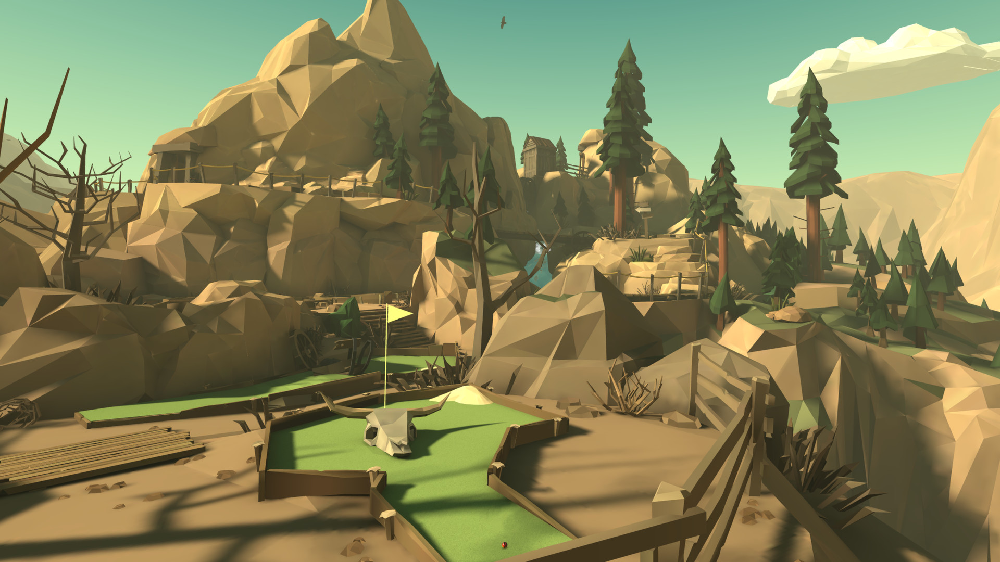7. Space Pirate Trainer
Space Prate Trainer is een shooter game waarbij je als ruimtepiraat verschillende uitdagingen moet voltooien. Het spel heeft een geweldige arcade-achtige stijl en biedt een intense en spannende ervaring
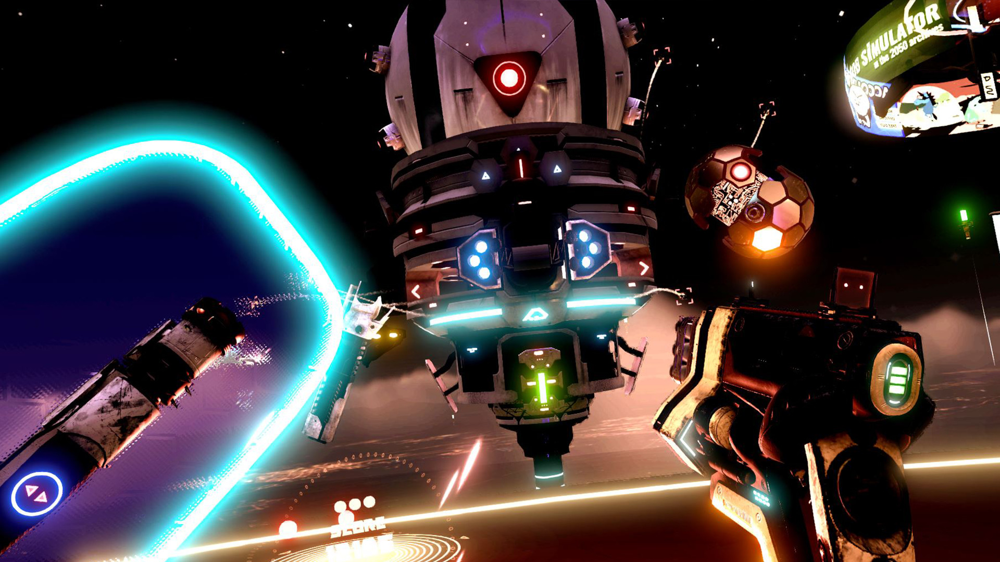8. Job simulator
Job Simulator is een VR-game waarbij je verschillende banen kunt uitproberen, zoals kok, kantoorbediende en winkelbediende. Het spel is erg grappig en biedt een leuke en interactieve ervaring.
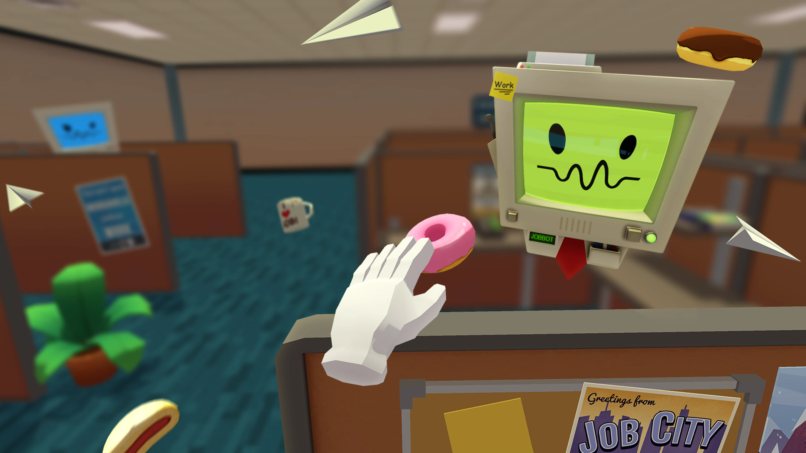9. The Climb
The Climb is een VR-game waarbij je bergen beklimt. Het spel biedt een intense en spannende ervaring, waarbij je obstakels moet vermijden en de top van de berg moet bereiken.
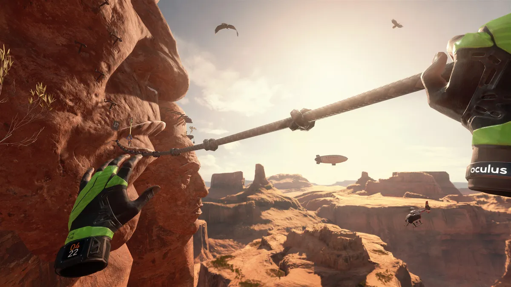10. Affected The Manor
Affected the Manor is een horror game waarbij je met slechts een zaklantaarn (die ook nog eens hapert) door een donker spookhuis loopt met onverwacht spannende special effects.
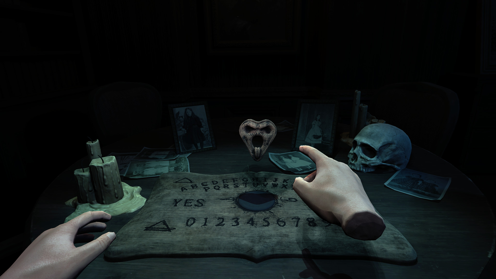